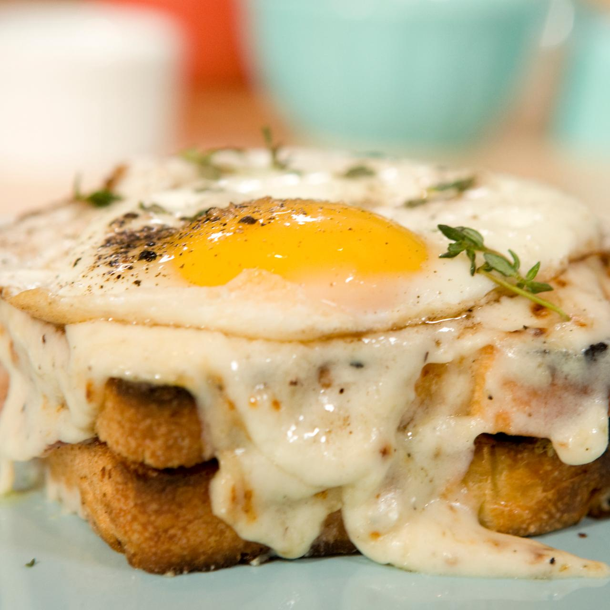

Croque Madame

Description
A great brunch (or lunch) meal, you'll find it difficult to make simpler sandwiches
after giving this one a try. The melty, smoky flavors a fresh broiled sandwich,
topped with a sunny-side up egg is hard to beat!
Ingredients
4 tablespoons salted butter, softened, divided
1 and 1/2 tablespoons all-purpose flour
1 cup milk
2 ounces shredded Gruyère cheese
salt and pepper, to taste
1/8 teaspoon ground nutmeg
4 slices white bread, lightly toasted
2 teaspoons Dijon mustard
2 thin slices Black Forest ham
2 large eggs
1 tablespoon water
Steps
- Set an oven rack 6 inches below the broiler, and preheat it.
- Melt 1 1/2 tablespoons of the salted butter in a saucepan over medium-low heat.
Whisk in the flour, continue to stir until slightly brown.
- Add the milk, stir the mixture, then bring it to a boil. Continue stirring until
it is boiling.
- Once it is boiling, reduce heat to a simmer for about 5 minutes, and add 1/2 of the Gruyère
cheese you shredded, salt and pepper, and nutmeg. Keep the mixture on the burner until the
cheese has completely melted.Then, set it aside.
- Toast the bread lightly, and butter the toast with some of the leftover butter. On the bottom slice,
add cheese sauce and a slice of ham. On the top slice, add Dijon mustard and some shredded
Gruyère. Put all four slices on a baking sheet.
- Broil until the cheese has almost melted. Remove from the oven,
and combine the slices to make two sandwiches, and pour the remaining cheese
sauce on each sandwich. Return it to the oven for a couple more minutes.
- While the sandwiches are finishing up, cook two eggs in the remaining butter.
Season with salt and pepper, and keep the eggs seperated. Add water to the pan,
and cover to set the whites, but keep the yolk runny.
- Remove the sandwiches from the oven and top each one with an egg. Serve
immediately.